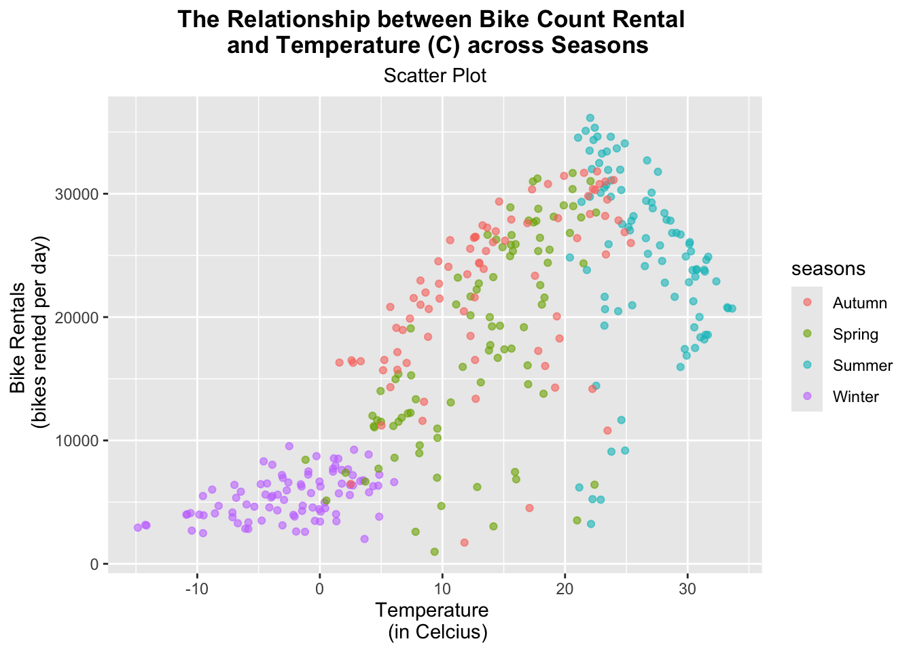
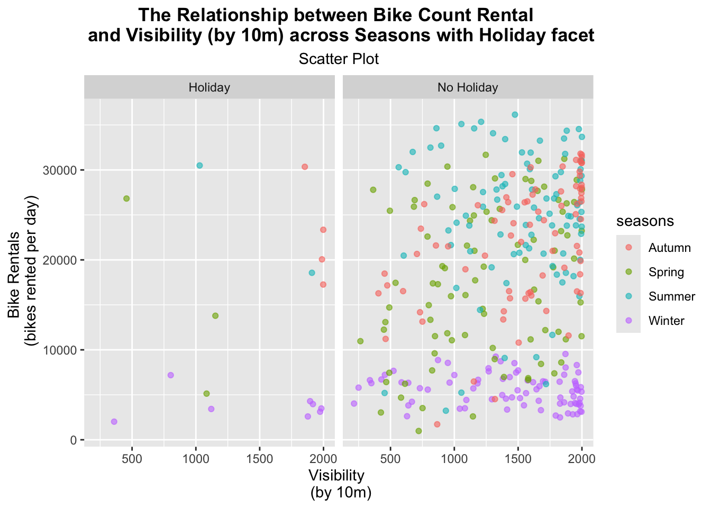

# Installed packages
# install.packages("tidyverse")
# install.packages("tidymodels") # For use of tidymodel functions
# install.packages("lubridate")
# install.packages("janitor")Week 8 - Basic Modeling Practice
Basic Modeling Practice
The purpose of this assignment is to create an EDA, exploratory data analysis, document for a data set about Seoul Bikes. We do this in order to better understand our data. The document will go through the following:
- Checking the data.
- Splitting the data.
- Fitting MLR models.
Note: Items are numbered for ease of grading; regardless, the document is still to be read in narrative form.
Checking the data
Staring off, we’re going to install and load the necessary packages to create the EDA. Then we’ll read in the data.
# Loading in libraries
library(tidyverse)
library(tidymodels)
library(lubridate)
library(janitor)
library(readr) # Read in data
bikes <- readr::read_csv("https://www4.stat.ncsu.edu/~online/datasets/SeoulBikeData.csv", locale = locale(encoding = "latin1"))
bikes# A tibble: 8,760 × 14
Date `Rented Bike Count` Hour `Temperature(°C)` `Humidity(%)`
<chr> <dbl> <dbl> <dbl> <dbl>
1 01/12/2017 254 0 -5.2 37
2 01/12/2017 204 1 -5.5 38
3 01/12/2017 173 2 -6 39
4 01/12/2017 107 3 -6.2 40
5 01/12/2017 78 4 -6 36
6 01/12/2017 100 5 -6.4 37
7 01/12/2017 181 6 -6.6 35
8 01/12/2017 460 7 -7.4 38
9 01/12/2017 930 8 -7.6 37
10 01/12/2017 490 9 -6.5 27
# ℹ 8,750 more rows
# ℹ 9 more variables: `Wind speed (m/s)` <dbl>, `Visibility (10m)` <dbl>,
# `Dew point temperature(°C)` <dbl>, `Solar Radiation (MJ/m2)` <dbl>,
# `Rainfall(mm)` <dbl>, `Snowfall (cm)` <dbl>, Seasons <chr>, Holiday <chr>,
# `Functioning Day` <chr>
- Next we’re going to check for missingness within our data set. As seen below, there are no columns missing any values or data, so we can move forward with continuing to check the data.
# Checked for missingness - to see if there are any missing values in the data set.
missingnesscheck <- is.na(bikes) %>% colSums()
missingnesscheck Date Rented Bike Count Hour
0 0 0
Temperature(°C) Humidity(%) Wind speed (m/s)
0 0 0
Visibility (10m) Dew point temperature(°C) Solar Radiation (MJ/m2)
0 0 0
Rainfall(mm) Snowfall (cm) Seasons
0 0 0
Holiday Functioning Day
0 0
- Now we’ll check the column types and their values to ensure it makes sense. We’ll do a basic summary of statistics for numeric columns and then check for the unique values of the categorical variables.
- Using the str function, when checking for the column types and values, it does indicate that the variables contain the correct column types and values accordingly. There are a total of 14 variables: 10 are numeric types (Rented Bike Count, Hour, Temperature, Humidity, Wind speed, Visibility, Dew point temperature, Solar Radiation, Rainfall, Snowfall) and 4 are character types (Date, Seasons, Holidays, Functioning Day).
- Using the summary function we selected numeric columns to create summary statistics for, which include the minimum, 1st quartile, median, mean, 3rd quartile, and maximum. These summary statistics give us some insight regarding weather conditions and total bike rentals.
- Using as.list, we’re able to collect each unique value of the categorical variables.
- Season levels contain the four seasons: Spring, Summer, Fall and Winter.
- Holiday levels contain: Holiday and No Holiday.
- Functioning Day levels contain: Yes and No.
# Checked for each variable's internal structure, denoting the data type of the variables.
str(bikes)spc_tbl_ [8,760 × 14] (S3: spec_tbl_df/tbl_df/tbl/data.frame)
$ Date : chr [1:8760] "01/12/2017" "01/12/2017" "01/12/2017" "01/12/2017" ...
$ Rented Bike Count : num [1:8760] 254 204 173 107 78 100 181 460 930 490 ...
$ Hour : num [1:8760] 0 1 2 3 4 5 6 7 8 9 ...
$ Temperature(°C) : num [1:8760] -5.2 -5.5 -6 -6.2 -6 -6.4 -6.6 -7.4 -7.6 -6.5 ...
$ Humidity(%) : num [1:8760] 37 38 39 40 36 37 35 38 37 27 ...
$ Wind speed (m/s) : num [1:8760] 2.2 0.8 1 0.9 2.3 1.5 1.3 0.9 1.1 0.5 ...
$ Visibility (10m) : num [1:8760] 2000 2000 2000 2000 2000 ...
$ Dew point temperature(°C): num [1:8760] -17.6 -17.6 -17.7 -17.6 -18.6 -18.7 -19.5 -19.3 -19.8 -22.4 ...
$ Solar Radiation (MJ/m2) : num [1:8760] 0 0 0 0 0 0 0 0 0.01 0.23 ...
$ Rainfall(mm) : num [1:8760] 0 0 0 0 0 0 0 0 0 0 ...
$ Snowfall (cm) : num [1:8760] 0 0 0 0 0 0 0 0 0 0 ...
$ Seasons : chr [1:8760] "Winter" "Winter" "Winter" "Winter" ...
$ Holiday : chr [1:8760] "No Holiday" "No Holiday" "No Holiday" "No Holiday" ...
$ Functioning Day : chr [1:8760] "Yes" "Yes" "Yes" "Yes" ...
- attr(*, "spec")=
.. cols(
.. Date = col_character(),
.. `Rented Bike Count` = col_double(),
.. Hour = col_double(),
.. `Temperature(°C)` = col_double(),
.. `Humidity(%)` = col_double(),
.. `Wind speed (m/s)` = col_double(),
.. `Visibility (10m)` = col_double(),
.. `Dew point temperature(°C)` = col_double(),
.. `Solar Radiation (MJ/m2)` = col_double(),
.. `Rainfall(mm)` = col_double(),
.. `Snowfall (cm)` = col_double(),
.. Seasons = col_character(),
.. Holiday = col_character(),
.. `Functioning Day` = col_character()
.. )
- attr(*, "problems")=<externalptr> # Created a basic summary of statistics for numeric columns by only selecting numerical variables
summary(select(bikes, -Date, -Seasons, -Holiday, -'Functioning Day')) Rented Bike Count Hour Temperature(°C) Humidity(%)
Min. : 0.0 Min. : 0.00 Min. :-17.80 Min. : 0.00
1st Qu.: 191.0 1st Qu.: 5.75 1st Qu.: 3.50 1st Qu.:42.00
Median : 504.5 Median :11.50 Median : 13.70 Median :57.00
Mean : 704.6 Mean :11.50 Mean : 12.88 Mean :58.23
3rd Qu.:1065.2 3rd Qu.:17.25 3rd Qu.: 22.50 3rd Qu.:74.00
Max. :3556.0 Max. :23.00 Max. : 39.40 Max. :98.00
Wind speed (m/s) Visibility (10m) Dew point temperature(°C)
Min. :0.000 Min. : 27 Min. :-30.600
1st Qu.:0.900 1st Qu.: 940 1st Qu.: -4.700
Median :1.500 Median :1698 Median : 5.100
Mean :1.725 Mean :1437 Mean : 4.074
3rd Qu.:2.300 3rd Qu.:2000 3rd Qu.: 14.800
Max. :7.400 Max. :2000 Max. : 27.200
Solar Radiation (MJ/m2) Rainfall(mm) Snowfall (cm)
Min. :0.0000 Min. : 0.0000 Min. :0.00000
1st Qu.:0.0000 1st Qu.: 0.0000 1st Qu.:0.00000
Median :0.0100 Median : 0.0000 Median :0.00000
Mean :0.5691 Mean : 0.1487 Mean :0.07507
3rd Qu.:0.9300 3rd Qu.: 0.0000 3rd Qu.:0.00000
Max. :3.5200 Max. :35.0000 Max. :8.80000 # Obtained a list of unique levels/values for each categorical variable
as.list(unique(bikes$Date))[[1]]
[1] "01/12/2017"
[[2]]
[1] "02/12/2017"
[[3]]
[1] "03/12/2017"
[[4]]
[1] "04/12/2017"
[[5]]
[1] "05/12/2017"
[[6]]
[1] "06/12/2017"
[[7]]
[1] "07/12/2017"
[[8]]
[1] "08/12/2017"
[[9]]
[1] "09/12/2017"
[[10]]
[1] "10/12/2017"
[[11]]
[1] "11/12/2017"
[[12]]
[1] "12/12/2017"
[[13]]
[1] "13/12/2017"
[[14]]
[1] "14/12/2017"
[[15]]
[1] "15/12/2017"
[[16]]
[1] "16/12/2017"
[[17]]
[1] "17/12/2017"
[[18]]
[1] "18/12/2017"
[[19]]
[1] "19/12/2017"
[[20]]
[1] "20/12/2017"
[[21]]
[1] "21/12/2017"
[[22]]
[1] "22/12/2017"
[[23]]
[1] "23/12/2017"
[[24]]
[1] "24/12/2017"
[[25]]
[1] "25/12/2017"
[[26]]
[1] "26/12/2017"
[[27]]
[1] "27/12/2017"
[[28]]
[1] "28/12/2017"
[[29]]
[1] "29/12/2017"
[[30]]
[1] "30/12/2017"
[[31]]
[1] "31/12/2017"
[[32]]
[1] "01/01/2018"
[[33]]
[1] "02/01/2018"
[[34]]
[1] "03/01/2018"
[[35]]
[1] "04/01/2018"
[[36]]
[1] "05/01/2018"
[[37]]
[1] "06/01/2018"
[[38]]
[1] "07/01/2018"
[[39]]
[1] "08/01/2018"
[[40]]
[1] "09/01/2018"
[[41]]
[1] "10/01/2018"
[[42]]
[1] "11/01/2018"
[[43]]
[1] "12/01/2018"
[[44]]
[1] "13/01/2018"
[[45]]
[1] "14/01/2018"
[[46]]
[1] "15/01/2018"
[[47]]
[1] "16/01/2018"
[[48]]
[1] "17/01/2018"
[[49]]
[1] "18/01/2018"
[[50]]
[1] "19/01/2018"
[[51]]
[1] "20/01/2018"
[[52]]
[1] "21/01/2018"
[[53]]
[1] "22/01/2018"
[[54]]
[1] "23/01/2018"
[[55]]
[1] "24/01/2018"
[[56]]
[1] "25/01/2018"
[[57]]
[1] "26/01/2018"
[[58]]
[1] "27/01/2018"
[[59]]
[1] "28/01/2018"
[[60]]
[1] "29/01/2018"
[[61]]
[1] "30/01/2018"
[[62]]
[1] "31/01/2018"
[[63]]
[1] "01/02/2018"
[[64]]
[1] "02/02/2018"
[[65]]
[1] "03/02/2018"
[[66]]
[1] "04/02/2018"
[[67]]
[1] "05/02/2018"
[[68]]
[1] "06/02/2018"
[[69]]
[1] "07/02/2018"
[[70]]
[1] "08/02/2018"
[[71]]
[1] "09/02/2018"
[[72]]
[1] "10/02/2018"
[[73]]
[1] "11/02/2018"
[[74]]
[1] "12/02/2018"
[[75]]
[1] "13/02/2018"
[[76]]
[1] "14/02/2018"
[[77]]
[1] "15/02/2018"
[[78]]
[1] "16/02/2018"
[[79]]
[1] "17/02/2018"
[[80]]
[1] "18/02/2018"
[[81]]
[1] "19/02/2018"
[[82]]
[1] "20/02/2018"
[[83]]
[1] "21/02/2018"
[[84]]
[1] "22/02/2018"
[[85]]
[1] "23/02/2018"
[[86]]
[1] "24/02/2018"
[[87]]
[1] "25/02/2018"
[[88]]
[1] "26/02/2018"
[[89]]
[1] "27/02/2018"
[[90]]
[1] "28/02/2018"
[[91]]
[1] "01/03/2018"
[[92]]
[1] "02/03/2018"
[[93]]
[1] "03/03/2018"
[[94]]
[1] "04/03/2018"
[[95]]
[1] "05/03/2018"
[[96]]
[1] "06/03/2018"
[[97]]
[1] "07/03/2018"
[[98]]
[1] "08/03/2018"
[[99]]
[1] "09/03/2018"
[[100]]
[1] "10/03/2018"
[[101]]
[1] "11/03/2018"
[[102]]
[1] "12/03/2018"
[[103]]
[1] "13/03/2018"
[[104]]
[1] "14/03/2018"
[[105]]
[1] "15/03/2018"
[[106]]
[1] "16/03/2018"
[[107]]
[1] "17/03/2018"
[[108]]
[1] "18/03/2018"
[[109]]
[1] "19/03/2018"
[[110]]
[1] "20/03/2018"
[[111]]
[1] "21/03/2018"
[[112]]
[1] "22/03/2018"
[[113]]
[1] "23/03/2018"
[[114]]
[1] "24/03/2018"
[[115]]
[1] "25/03/2018"
[[116]]
[1] "26/03/2018"
[[117]]
[1] "27/03/2018"
[[118]]
[1] "28/03/2018"
[[119]]
[1] "29/03/2018"
[[120]]
[1] "30/03/2018"
[[121]]
[1] "31/03/2018"
[[122]]
[1] "01/04/2018"
[[123]]
[1] "02/04/2018"
[[124]]
[1] "03/04/2018"
[[125]]
[1] "04/04/2018"
[[126]]
[1] "05/04/2018"
[[127]]
[1] "06/04/2018"
[[128]]
[1] "07/04/2018"
[[129]]
[1] "08/04/2018"
[[130]]
[1] "09/04/2018"
[[131]]
[1] "10/04/2018"
[[132]]
[1] "11/04/2018"
[[133]]
[1] "12/04/2018"
[[134]]
[1] "13/04/2018"
[[135]]
[1] "14/04/2018"
[[136]]
[1] "15/04/2018"
[[137]]
[1] "16/04/2018"
[[138]]
[1] "17/04/2018"
[[139]]
[1] "18/04/2018"
[[140]]
[1] "19/04/2018"
[[141]]
[1] "20/04/2018"
[[142]]
[1] "21/04/2018"
[[143]]
[1] "22/04/2018"
[[144]]
[1] "23/04/2018"
[[145]]
[1] "24/04/2018"
[[146]]
[1] "25/04/2018"
[[147]]
[1] "26/04/2018"
[[148]]
[1] "27/04/2018"
[[149]]
[1] "28/04/2018"
[[150]]
[1] "29/04/2018"
[[151]]
[1] "30/04/2018"
[[152]]
[1] "01/05/2018"
[[153]]
[1] "02/05/2018"
[[154]]
[1] "03/05/2018"
[[155]]
[1] "04/05/2018"
[[156]]
[1] "05/05/2018"
[[157]]
[1] "06/05/2018"
[[158]]
[1] "07/05/2018"
[[159]]
[1] "08/05/2018"
[[160]]
[1] "09/05/2018"
[[161]]
[1] "10/05/2018"
[[162]]
[1] "11/05/2018"
[[163]]
[1] "12/05/2018"
[[164]]
[1] "13/05/2018"
[[165]]
[1] "14/05/2018"
[[166]]
[1] "15/05/2018"
[[167]]
[1] "16/05/2018"
[[168]]
[1] "17/05/2018"
[[169]]
[1] "18/05/2018"
[[170]]
[1] "19/05/2018"
[[171]]
[1] "20/05/2018"
[[172]]
[1] "21/05/2018"
[[173]]
[1] "22/05/2018"
[[174]]
[1] "23/05/2018"
[[175]]
[1] "24/05/2018"
[[176]]
[1] "25/05/2018"
[[177]]
[1] "26/05/2018"
[[178]]
[1] "27/05/2018"
[[179]]
[1] "28/05/2018"
[[180]]
[1] "29/05/2018"
[[181]]
[1] "30/05/2018"
[[182]]
[1] "31/05/2018"
[[183]]
[1] "01/06/2018"
[[184]]
[1] "02/06/2018"
[[185]]
[1] "03/06/2018"
[[186]]
[1] "04/06/2018"
[[187]]
[1] "05/06/2018"
[[188]]
[1] "06/06/2018"
[[189]]
[1] "07/06/2018"
[[190]]
[1] "08/06/2018"
[[191]]
[1] "09/06/2018"
[[192]]
[1] "10/06/2018"
[[193]]
[1] "11/06/2018"
[[194]]
[1] "12/06/2018"
[[195]]
[1] "13/06/2018"
[[196]]
[1] "14/06/2018"
[[197]]
[1] "15/06/2018"
[[198]]
[1] "16/06/2018"
[[199]]
[1] "17/06/2018"
[[200]]
[1] "18/06/2018"
[[201]]
[1] "19/06/2018"
[[202]]
[1] "20/06/2018"
[[203]]
[1] "21/06/2018"
[[204]]
[1] "22/06/2018"
[[205]]
[1] "23/06/2018"
[[206]]
[1] "24/06/2018"
[[207]]
[1] "25/06/2018"
[[208]]
[1] "26/06/2018"
[[209]]
[1] "27/06/2018"
[[210]]
[1] "28/06/2018"
[[211]]
[1] "29/06/2018"
[[212]]
[1] "30/06/2018"
[[213]]
[1] "01/07/2018"
[[214]]
[1] "02/07/2018"
[[215]]
[1] "03/07/2018"
[[216]]
[1] "04/07/2018"
[[217]]
[1] "05/07/2018"
[[218]]
[1] "06/07/2018"
[[219]]
[1] "07/07/2018"
[[220]]
[1] "08/07/2018"
[[221]]
[1] "09/07/2018"
[[222]]
[1] "10/07/2018"
[[223]]
[1] "11/07/2018"
[[224]]
[1] "12/07/2018"
[[225]]
[1] "13/07/2018"
[[226]]
[1] "14/07/2018"
[[227]]
[1] "15/07/2018"
[[228]]
[1] "16/07/2018"
[[229]]
[1] "17/07/2018"
[[230]]
[1] "18/07/2018"
[[231]]
[1] "19/07/2018"
[[232]]
[1] "20/07/2018"
[[233]]
[1] "21/07/2018"
[[234]]
[1] "22/07/2018"
[[235]]
[1] "23/07/2018"
[[236]]
[1] "24/07/2018"
[[237]]
[1] "25/07/2018"
[[238]]
[1] "26/07/2018"
[[239]]
[1] "27/07/2018"
[[240]]
[1] "28/07/2018"
[[241]]
[1] "29/07/2018"
[[242]]
[1] "30/07/2018"
[[243]]
[1] "31/07/2018"
[[244]]
[1] "01/08/2018"
[[245]]
[1] "02/08/2018"
[[246]]
[1] "03/08/2018"
[[247]]
[1] "04/08/2018"
[[248]]
[1] "05/08/2018"
[[249]]
[1] "06/08/2018"
[[250]]
[1] "07/08/2018"
[[251]]
[1] "08/08/2018"
[[252]]
[1] "09/08/2018"
[[253]]
[1] "10/08/2018"
[[254]]
[1] "11/08/2018"
[[255]]
[1] "12/08/2018"
[[256]]
[1] "13/08/2018"
[[257]]
[1] "14/08/2018"
[[258]]
[1] "15/08/2018"
[[259]]
[1] "16/08/2018"
[[260]]
[1] "17/08/2018"
[[261]]
[1] "18/08/2018"
[[262]]
[1] "19/08/2018"
[[263]]
[1] "20/08/2018"
[[264]]
[1] "21/08/2018"
[[265]]
[1] "22/08/2018"
[[266]]
[1] "23/08/2018"
[[267]]
[1] "24/08/2018"
[[268]]
[1] "25/08/2018"
[[269]]
[1] "26/08/2018"
[[270]]
[1] "27/08/2018"
[[271]]
[1] "28/08/2018"
[[272]]
[1] "29/08/2018"
[[273]]
[1] "30/08/2018"
[[274]]
[1] "31/08/2018"
[[275]]
[1] "01/09/2018"
[[276]]
[1] "02/09/2018"
[[277]]
[1] "03/09/2018"
[[278]]
[1] "04/09/2018"
[[279]]
[1] "05/09/2018"
[[280]]
[1] "06/09/2018"
[[281]]
[1] "07/09/2018"
[[282]]
[1] "08/09/2018"
[[283]]
[1] "09/09/2018"
[[284]]
[1] "10/09/2018"
[[285]]
[1] "11/09/2018"
[[286]]
[1] "12/09/2018"
[[287]]
[1] "13/09/2018"
[[288]]
[1] "14/09/2018"
[[289]]
[1] "15/09/2018"
[[290]]
[1] "16/09/2018"
[[291]]
[1] "17/09/2018"
[[292]]
[1] "18/09/2018"
[[293]]
[1] "19/09/2018"
[[294]]
[1] "20/09/2018"
[[295]]
[1] "21/09/2018"
[[296]]
[1] "22/09/2018"
[[297]]
[1] "23/09/2018"
[[298]]
[1] "24/09/2018"
[[299]]
[1] "25/09/2018"
[[300]]
[1] "26/09/2018"
[[301]]
[1] "27/09/2018"
[[302]]
[1] "28/09/2018"
[[303]]
[1] "29/09/2018"
[[304]]
[1] "30/09/2018"
[[305]]
[1] "01/10/2018"
[[306]]
[1] "02/10/2018"
[[307]]
[1] "03/10/2018"
[[308]]
[1] "04/10/2018"
[[309]]
[1] "05/10/2018"
[[310]]
[1] "06/10/2018"
[[311]]
[1] "07/10/2018"
[[312]]
[1] "08/10/2018"
[[313]]
[1] "09/10/2018"
[[314]]
[1] "10/10/2018"
[[315]]
[1] "11/10/2018"
[[316]]
[1] "12/10/2018"
[[317]]
[1] "13/10/2018"
[[318]]
[1] "14/10/2018"
[[319]]
[1] "15/10/2018"
[[320]]
[1] "16/10/2018"
[[321]]
[1] "17/10/2018"
[[322]]
[1] "18/10/2018"
[[323]]
[1] "19/10/2018"
[[324]]
[1] "20/10/2018"
[[325]]
[1] "21/10/2018"
[[326]]
[1] "22/10/2018"
[[327]]
[1] "23/10/2018"
[[328]]
[1] "24/10/2018"
[[329]]
[1] "25/10/2018"
[[330]]
[1] "26/10/2018"
[[331]]
[1] "27/10/2018"
[[332]]
[1] "28/10/2018"
[[333]]
[1] "29/10/2018"
[[334]]
[1] "30/10/2018"
[[335]]
[1] "31/10/2018"
[[336]]
[1] "01/11/2018"
[[337]]
[1] "02/11/2018"
[[338]]
[1] "03/11/2018"
[[339]]
[1] "04/11/2018"
[[340]]
[1] "05/11/2018"
[[341]]
[1] "06/11/2018"
[[342]]
[1] "07/11/2018"
[[343]]
[1] "08/11/2018"
[[344]]
[1] "09/11/2018"
[[345]]
[1] "10/11/2018"
[[346]]
[1] "11/11/2018"
[[347]]
[1] "12/11/2018"
[[348]]
[1] "13/11/2018"
[[349]]
[1] "14/11/2018"
[[350]]
[1] "15/11/2018"
[[351]]
[1] "16/11/2018"
[[352]]
[1] "17/11/2018"
[[353]]
[1] "18/11/2018"
[[354]]
[1] "19/11/2018"
[[355]]
[1] "20/11/2018"
[[356]]
[1] "21/11/2018"
[[357]]
[1] "22/11/2018"
[[358]]
[1] "23/11/2018"
[[359]]
[1] "24/11/2018"
[[360]]
[1] "25/11/2018"
[[361]]
[1] "26/11/2018"
[[362]]
[1] "27/11/2018"
[[363]]
[1] "28/11/2018"
[[364]]
[1] "29/11/2018"
[[365]]
[1] "30/11/2018"as.list(unique(bikes$Seasons))[[1]]
[1] "Winter"
[[2]]
[1] "Spring"
[[3]]
[1] "Summer"
[[4]]
[1] "Autumn"as.list(unique(bikes$Holiday))[[1]]
[1] "No Holiday"
[[2]]
[1] "Holiday"as.list(unique(bikes$'Functioning Day'))[[1]]
[1] "Yes"
[[2]]
[1] "No"
- Next we’ll convert the Date column into month/day/year to more easily read and viewed the data set.
# Using lubridate, we're reformmating the date to be m/d/y. First we use as.Date to parse the dates and allow them to be readable in R then we reformat them as m/d/y.
bikes <- bikes %>%
mutate(Date = dmy(Date))
- Now we’re going to change the categorical variables to have a class of factor. This’ll allow us to use the factors/levels of these variables in statistical modeling for us to better understand how these different levels are affected.
# Used mutate to change the categorical variable class characters to factors.
bikes <- bikes %>%
mutate(Seasons = as.factor(Seasons),
Holiday = as.factor(Holiday),
`Functioning Day` = as.factor(`Functioning Day`))
- Last, we’re going rename all of the variables to have easy names to reference. Using the clean_names function, this’ll make it easier for us to reference in our later queries due to the universal naming convention.
# Used clean_names function from the janitor package to lowercase and insert '_' names for all columns.
bikes <- bikes %>%
clean_names()
- Now that our data is clean up, we’re going to create summary statistics about bike rental count across our categorical variables. When creating the first summary statistics for bike rentals, bike functioning day that equaled no contained no information to find a statistic on because no bikes were rented on those days. As a result, we created another summary filtering to only keep where bike functioning day equaled to yes.
# Created a bike rental summary grouped by seasons, holiday, and functioning_day
bike_rental_summary <- bikes %>%
group_by(seasons, holiday, functioning_day) %>%
summarise(bike_rental_min = min(rented_bike_count),
bike_rental_median = median(rented_bike_count),
bike_rental_max = max(rented_bike_count),
bike_rental_mean = mean(rented_bike_count),
bike_rental_sd = sd(rented_bike_count))
bike_rental_summary# A tibble: 11 × 8
# Groups: seasons, holiday [8]
seasons holiday functioning_day bike_rental_min bike_rental_median
<fct> <fct> <fct> <dbl> <dbl>
1 Autumn Holiday No 0 0
2 Autumn Holiday Yes 105 900
3 Autumn No Holiday No 0 0
4 Autumn No Holiday Yes 2 852
5 Spring Holiday Yes 11 366.
6 Spring No Holiday No 0 0
7 Spring No Holiday Yes 2 605
8 Summer Holiday Yes 218 925
9 Summer No Holiday Yes 9 904.
10 Winter Holiday Yes 3 138
11 Winter No Holiday Yes 7 212
# ℹ 3 more variables: bike_rental_max <dbl>, bike_rental_mean <dbl>,
# bike_rental_sd <dbl># Further subsetted where functioning day is yes
bike_rental_summary_functional <- bikes %>%
filter(functioning_day == "Yes") %>%
group_by(seasons, holiday, functioning_day) %>%
summarise(bike_rental_min = min(rented_bike_count),
bike_rental_median = median(rented_bike_count),
bike_rental_max = max(rented_bike_count),
bike_rental_mean = mean(rented_bike_count),
bike_rental_sd = sd(rented_bike_count))
bike_rental_summary_functional# A tibble: 8 × 8
# Groups: seasons, holiday [8]
seasons holiday functioning_day bike_rental_min bike_rental_median
<fct> <fct> <fct> <dbl> <dbl>
1 Autumn Holiday Yes 105 900
2 Autumn No Holiday Yes 2 852
3 Spring Holiday Yes 11 366.
4 Spring No Holiday Yes 2 605
5 Summer Holiday Yes 218 925
6 Summer No Holiday Yes 9 904.
7 Winter Holiday Yes 3 138
8 Winter No Holiday Yes 7 212
# ℹ 3 more variables: bike_rental_max <dbl>, bike_rental_mean <dbl>,
# bike_rental_sd <dbl>
- In order to simplify our previous analysis and initial bikes data set, we’re going to summarize across the hours so each day has one observation associated with it along with each weather condition. We’ll do this by summing up the total amount of bikes rented per hour per day to return This daily rental summary gives us a much better grasp of daily statistics compared to the initial bike data which filtered the data per each hour of the day for bike rentals, whereas this new summary combines all of those hour values into one day to give us a total amount of bikes rented per day. We continue to filter by a functioning day of yes so it doesn’t skew our summary of statistics regarding bike rental data and the rest of the numerical variables. Additionally, when filtering out functioning day ‘No’, the total data goes from 365 days to 353 days indicating that there were 12 days that no bikes were rented out to people.
daily_rental_summary <- bikes %>%
filter(functioning_day == "Yes") %>%
group_by(date, seasons, holiday) %>%
summarise(bike_count_sum = sum(rented_bike_count),
rainfall_mm_sum = sum(rainfall_mm),
snowfall_cm_sum = sum(snowfall_cm),
temperature_c_mean = mean(temperature_c),
humidity_percent_mean = mean(humidity_percent),
wind_speed_mean = mean(wind_speed_m_s),
visibility_mean = mean(visibility_10m),
dew_point_temp_c_mean = mean(dew_point_temperature_c),
solar_radiation_mean = mean(solar_radiation_mj_m2),
rainfall_mm_mean = mean(rainfall_mm),
snowfall_cm_mean = mean(snowfall_cm))
daily_rental_summary# A tibble: 353 × 14
# Groups: date, seasons [353]
date seasons holiday bike_count_sum rainfall_mm_sum snowfall_cm_sum
<date> <fct> <fct> <dbl> <dbl> <dbl>
1 2017-12-01 Winter No Holiday 9539 0 0
2 2017-12-02 Winter No Holiday 8523 0 0
3 2017-12-03 Winter No Holiday 7222 4 0
4 2017-12-04 Winter No Holiday 8729 0.1 0
5 2017-12-05 Winter No Holiday 8307 0 0
6 2017-12-06 Winter No Holiday 6669 1.3 8.6
7 2017-12-07 Winter No Holiday 8549 0 10.4
8 2017-12-08 Winter No Holiday 8032 0 0
9 2017-12-09 Winter No Holiday 7233 0 0
10 2017-12-10 Winter No Holiday 3453 4.1 32.5
# ℹ 343 more rows
# ℹ 8 more variables: temperature_c_mean <dbl>, humidity_percent_mean <dbl>,
# wind_speed_mean <dbl>, visibility_mean <dbl>, dew_point_temp_c_mean <dbl>,
# solar_radiation_mean <dbl>, rainfall_mm_mean <dbl>, snowfall_cm_mean <dbl>
- Now with this new analysis, we’re going to create a summary statistic of our daily rental summary to explore some data. As seen below, there are a total of 353 observations, denoted by ‘date’ in this data set. Of those dates 81 of them are from the Autumn, 90 from the Winter, 90 from the Spring, and 92 from the Summer. Out of the 353 days, 17 of those days are defined as holidays and 336 are not considered holidays. There’s a handful of data to go through for the weather conditions, but we’ll create a correlation matrix and some plots below to explore those.
# Created a summary statistics for the daily_rental_summary
summary(daily_rental_summary) date seasons holiday bike_count_sum
Min. :2017-12-01 Autumn:81 Holiday : 17 Min. : 977
1st Qu.:2018-02-27 Spring:90 No Holiday:336 1st Qu.: 6967
Median :2018-05-28 Summer:92 Median :18563
Mean :2018-05-28 Winter:90 Mean :17485
3rd Qu.:2018-08-24 3rd Qu.:26285
Max. :2018-11-30 Max. :36149
rainfall_mm_sum snowfall_cm_sum temperature_c_mean humidity_percent_mean
Min. : 0.000 Min. : 0.000 Min. :-14.738 Min. :22.25
1st Qu.: 0.000 1st Qu.: 0.000 1st Qu.: 3.304 1st Qu.:47.58
Median : 0.000 Median : 0.000 Median : 13.738 Median :57.17
Mean : 3.576 Mean : 1.863 Mean : 12.776 Mean :58.17
3rd Qu.: 0.500 3rd Qu.: 0.000 3rd Qu.: 22.592 3rd Qu.:67.71
Max. :95.500 Max. :78.700 Max. : 33.742 Max. :95.88
wind_speed_mean visibility_mean dew_point_temp_c_mean solar_radiation_mean
Min. :0.6625 Min. : 214.3 Min. :-27.750 Min. :0.02917
1st Qu.:1.3042 1st Qu.:1087.0 1st Qu.: -5.188 1st Qu.:0.28333
Median :1.6583 Median :1557.8 Median : 4.612 Median :0.56500
Mean :1.7261 Mean :1434.0 Mean : 3.954 Mean :0.56773
3rd Qu.:1.9542 3rd Qu.:1874.3 3rd Qu.: 14.921 3rd Qu.:0.82000
Max. :4.0000 Max. :2000.0 Max. : 25.038 Max. :1.21667
rainfall_mm_mean snowfall_cm_mean
Min. :0.00000 Min. :0.00000
1st Qu.:0.00000 1st Qu.:0.00000
Median :0.00000 Median :0.00000
Mean :0.15072 Mean :0.07762
3rd Qu.:0.02083 3rd Qu.:0.00000
Max. :3.97917 Max. :3.27917 Below I have created the first plot, a scatter plot to look at the relationship between bike count rentals and temperature across seasons. The plot shows a strong positive correlation between these two variables, as one variable increases, the other increases. As temperature increases, bike rentals also increases. There are a cluster of data points where the temperature is below 10 degrees celcius with under 10,000 bike rentals per day; those data points most likely represent days colder days with potential less favorable biking conditions, as seen, denoted by the winter data points. Then there is a cluster of data points from 20 to 25 degrees celcius with more than 30,000 bike rentals a day; that cluster represents and shows that perhaps bike riders enjoy more warm weather, denoted by a mix of the Spring, Autumn, and Summer data points. Additionally, the data points are much more spread from 10 to 30 degrees celcius, perhaps indicating that people enjoy riding in more warm weather. However, there are also days where the temperatures are higher but bike rentals are low… this could be due to other weather conditions like some rainfall, wind speeds, holidays, etc.
# Created a scatterplot to explore
scatter_plot <- ggplot(daily_rental_summary,
aes(x = temperature_c_mean, y = bike_count_sum, color = seasons)) +
geom_jitter(width = 0.2, alpha = 0.6) +
ggtitle(label = "The Relationship between Bike Count Rental \n and Temperature (C) across Seasons",
subtitle = "Scatter Plot") +
theme(plot.title = element_text(hjust = 0.5, face = "bold"),
plot.subtitle = element_text(hjust = 0.5)) +
labs(x = "Temperature \n (in Celcius)",
y = "Bike Rentals \n (bikes rented per day)") +
scale_fill_discrete("Temperature")
scatter_plot
For biking novices like myself, weather conditions that affect biking such as rainfall, snowfall, etc. are apparent, which is I’m interested in how visibility may affect bike rentals. Below I have created a plot between visibility and bike rentals across seasons and faceted by holidays. Upon observation there is a slight positive correlation on non-holidays with more rentals based on more visibility. For the holiday facet, there is not much of a pattern with rentals being spread across the entire range of visibility perhaps showcasing that visibility doesn’t affect bike rental rate as much on holidays. When looking at both holiday and non-holiday data, Summer and Autumn months produce a higher number of bike rentals compared to Winter and Spring months. Summer months show the highest number of rentals on non-holidays from 500m to 2,000m indicating that summer weather encourages biking regardless of the visibility. In conclusion, the higher the visibility, the more bike rentals there are as the plots showcase a strong positive relationship between the two variables.
facet_plot <- ggplot(daily_rental_summary,
aes(x = visibility_mean, y = bike_count_sum, color = seasons)) +
geom_jitter(width = 0.2, alpha = 0.6) +
facet_wrap(~ holiday) +
ggtitle(label = "The Relationship between Bike Count Rental \n and Visibility (by 10m) across Seasons with Holiday facet",
subtitle = "Scatter Plot") +
theme(plot.title = element_text(hjust = 0.5, face = "bold"),
plot.subtitle = element_text(hjust = 0.5)) +
labs(x = "Visibility \n (by 10m)",
y = "Bike Rentals \n (bikes rented per day)")
facet_plot
Next is the reported correlation matrix for all of the numeric variables; since there are so many, I will pick and choose a handful of correlations (relationship between variables) related to bike_count_sum to explore. Looking at bike_count_sum and its correlations in the first column, we can see that there are some strong positive correlations (as one variable increases, the other also increases), mainly bike_count_sum and temperature with a correlation of 0.753 and bike_count_sum and solar_radiation with a correlation of 0.736. From the first observation, we can see that higher temperatures are associated with a higher number of bike rentals; bike riders enjoy good weather and warmer temperatures when riding bikes. This supported our first scatterplot as we a strong positive correlation from the plot. The second correlation shows that higher solar radiation, i.e. more sun, also correlates with more bike rentals. Additionally, there are many weak negative correlations (as one variable increases, the other one one decreases) with bike_count such as: wind_speed_mean (-0.193), rainfall_mm_mean (-0.237), and snowfall_mm_mean (-0.265). Bike rental counts are expected to be negatively associated with these weather variables because high wind speeds, rainfall, and snowfall affect biking conditions and enviroments, and as a result tend to reduce bike rental rates.
# Created a filtered data frame to only show numeric variables to create correlation matrix
numeric_daily_rental_summary <- daily_rental_summary %>%
ungroup() %>%
select(where(is.numeric))
numeric_daily_rental_summary# A tibble: 353 × 11
bike_count_sum rainfall_mm_sum snowfall_cm_sum temperature_c_mean
<dbl> <dbl> <dbl> <dbl>
1 9539 0 0 -2.45
2 8523 0 0 1.32
3 7222 4 0 4.88
4 8729 0.1 0 -0.304
5 8307 0 0 -4.46
6 6669 1.3 8.6 0.0458
7 8549 0 10.4 1.09
8 8032 0 0 -3.82
9 7233 0 0 -0.846
10 3453 4.1 32.5 1.19
# ℹ 343 more rows
# ℹ 7 more variables: humidity_percent_mean <dbl>, wind_speed_mean <dbl>,
# visibility_mean <dbl>, dew_point_temp_c_mean <dbl>,
# solar_radiation_mean <dbl>, rainfall_mm_mean <dbl>, snowfall_cm_mean <dbl># Referenced previously created filtered data frame to create a correlation matrix between all of the numeric variables
num_cor_matrix <- numeric_daily_rental_summary %>%
cor()
num_cor_matrix bike_count_sum rainfall_mm_sum snowfall_cm_sum
bike_count_sum 1.00000000 -0.23910905 -0.26529110
rainfall_mm_sum -0.23910905 1.00000000 -0.02313404
snowfall_cm_sum -0.26529110 -0.02313404 1.00000000
temperature_c_mean 0.75307673 0.14451727 -0.26696366
humidity_percent_mean 0.03588697 0.52864263 0.06539191
wind_speed_mean -0.19288142 -0.10167578 0.02088156
visibility_mean 0.16599375 -0.22199387 -0.10188902
dew_point_temp_c_mean 0.65047655 0.26456621 -0.20955286
solar_radiation_mean 0.73589290 -0.32270413 -0.23343056
rainfall_mm_mean -0.23686365 0.99791474 -0.02360438
snowfall_cm_mean -0.26529110 -0.02313404 1.00000000
temperature_c_mean humidity_percent_mean wind_speed_mean
bike_count_sum 0.753076732 0.03588697 -0.19288142
rainfall_mm_sum 0.144517274 0.52864263 -0.10167578
snowfall_cm_sum -0.266963662 0.06539191 0.02088156
temperature_c_mean 1.000000000 0.40416749 -0.26072179
humidity_percent_mean 0.404167486 1.00000000 -0.23425778
wind_speed_mean -0.260721792 -0.23425778 1.00000000
visibility_mean 0.002336683 -0.55917733 0.20602264
dew_point_temp_c_mean 0.962796255 0.63204729 -0.28770322
solar_radiation_mean 0.550274301 -0.27444967 0.09612635
rainfall_mm_mean 0.144573425 0.52795952 -0.09863450
snowfall_cm_mean -0.266963662 0.06539191 0.02088156
visibility_mean dew_point_temp_c_mean
bike_count_sum 0.165993749 0.6504765
rainfall_mm_sum -0.221993866 0.2645662
snowfall_cm_sum -0.101889019 -0.2095529
temperature_c_mean 0.002336683 0.9627963
humidity_percent_mean -0.559177334 0.6320473
wind_speed_mean 0.206022636 -0.2877032
visibility_mean 1.000000000 -0.1535516
dew_point_temp_c_mean -0.153551591 1.0000000
solar_radiation_mean 0.271395906 0.3831571
rainfall_mm_mean -0.218236382 0.2644913
snowfall_cm_mean -0.101889019 -0.2095529
solar_radiation_mean rainfall_mm_mean snowfall_cm_mean
bike_count_sum 0.73589290 -0.23686365 -0.26529110
rainfall_mm_sum -0.32270413 0.99791474 -0.02313404
snowfall_cm_sum -0.23343056 -0.02360438 1.00000000
temperature_c_mean 0.55027430 0.14457343 -0.26696366
humidity_percent_mean -0.27444967 0.52795952 0.06539191
wind_speed_mean 0.09612635 -0.09863450 0.02088156
visibility_mean 0.27139591 -0.21823638 -0.10188902
dew_point_temp_c_mean 0.38315713 0.26449127 -0.20955286
solar_radiation_mean 1.00000000 -0.32079734 -0.23343056
rainfall_mm_mean -0.32079734 1.00000000 -0.02360438
snowfall_cm_mean -0.23343056 -0.02360438 1.00000000Split the data
For this next section, we’ll be splitting the data: 75% of the data into the training set and 25% of it into the test set. We’ll also stratify the data by seasons. Additionally, on the training set we’ll create a 10 fold CV split, which randomly splits the data into V groups of roughly equal size (“folds”).
# Split the data
set.seed(123)
bike_split <- initial_split(daily_rental_summary, prop = 3/4, strata = seasons)
train_data <- training(bike_split)
test_data <- testing(bike_split)# Created a 10 fold CV split
cv_folds_10 <- vfold_cv(data = train_data, v = 10)Fitting MLR Models
Now we’re going to work on creating the recipes!
- First recipe!
Here we’re going to fix up the date variable a bit, standardize the numeric variables, and create dummy variables for the seasons, holiday, and our new day type!
# Creating the first recipe
recipe_1 <- recipe(bike_count_sum ~ ., data = train_data) %>%
step_date(date, features = "dow") %>% # Used to extract day of week
step_rm(date) %>%
step_mutate(day_type = factor(if_else(date_dow %in% c("Sat", "Sun"), "weekend", "weekday"))) %>% # Creating day_type to categorical variable with 2 levels: weekend and weekday
step_rm(date_dow) %>% # Used as a general variable filter
# step_rm(dow_day) %>% # Removed the intermediate variable created
step_normalize(all_numeric()) %>% # Standardizes all numeric variables
step_dummy(seasons, holiday, day_type) # Created dummy variables# Checking recipe
prep_recipe1 <- recipe_1 %>%
prep(training = train_data)
baked_data1 <- bake(prep_recipe1, new_data = NULL)
head(baked_data1)# A tibble: 6 × 16
rainfall_mm_sum snowfall_cm_sum temperature_c_mean humidity_percent_mean
<dbl> <dbl> <dbl> <dbl>
1 -0.297 -0.218 0.943 0.214
2 -0.297 -0.218 0.978 0.818
3 -0.177 -0.218 0.800 -0.116
4 -0.297 -0.218 0.760 -0.666
5 -0.297 -0.218 0.783 -0.613
6 -0.297 -0.218 0.867 -0.571
# ℹ 12 more variables: wind_speed_mean <dbl>, visibility_mean <dbl>,
# dew_point_temp_c_mean <dbl>, solar_radiation_mean <dbl>,
# rainfall_mm_mean <dbl>, snowfall_cm_mean <dbl>, bike_count_sum <dbl>,
# seasons_Spring <dbl>, seasons_Summer <dbl>, seasons_Winter <dbl>,
# holiday_No.Holiday <dbl>, day_type_weekend <dbl>- Second recipe!
Now we’re going to follow the same steps as the first recipe and add interactions between seasons and holiday, seasons and temp, temp and rainfall.
# Creating the second recipe
recipe_2 <- recipe("bike_count_sum" ~ ., data = train_data) %>%
step_date(date, features = "dow") %>% # Used to extract day of week
step_rm(date) %>%
step_mutate(day_type = factor(if_else(date_dow %in% c("Sat", "Sun"), "weekend", "weekday"))) %>% # Creating day_type to categorical variable with 2 levels: weekend and weekday
step_rm(date_dow) %>% # Used as a general variable filter
# step_rm(dow_day) %>% # Removed the intermediate variable created
step_normalize(all_numeric()) %>% # Standardizes all numeric variables
step_dummy(seasons, holiday, day_type) %>% # Created dummy variables # Created dummy variables
step_interact(~ starts_with("seasons"):holiday_No.Holiday) %>%
step_interact(~ starts_with("seasons"):temperature_c_mean) %>%
step_interact(~ temperature_c_mean:rainfall_mm_sum) # Created for the interactions# Checking recipe 2
prep_recipe2 <- recipe_2 %>%
prep(training = train_data)
baked_data2 <- bake(prep_recipe2, new_data = NULL)
head(baked_data2)# A tibble: 6 × 26
bike_count_sum rainfall_mm_sum snowfall_cm_sum temperature_c_mean
<dbl> <dbl> <dbl> <dbl>
1 1.40 -0.297 -0.218 0.943
2 1.07 -0.297 -0.218 0.978
3 1.33 -0.177 -0.218 0.800
4 1.27 -0.297 -0.218 0.760
5 1.12 -0.297 -0.218 0.783
6 1.37 -0.297 -0.218 0.867
# ℹ 22 more variables: humidity_percent_mean <dbl>, wind_speed_mean <dbl>,
# visibility_mean <dbl>, dew_point_temp_c_mean <dbl>,
# solar_radiation_mean <dbl>, rainfall_mm_mean <dbl>, snowfall_cm_mean <dbl>,
# seasons_Spring <dbl>, seasons_Summer <dbl>, seasons_Winter <dbl>,
# holiday_No.Holiday <dbl>, day_type_weekend <dbl>,
# seasons_Spring_x_holiday_No.Holiday <dbl>,
# seasons_Summer_x_holiday_No.Holiday <dbl>, …- Third recipe!
Now we’re going to follow the same steps as the second recipe and add quadratic terms for each numeric predictor
# Creating the third recipe
recipe_3 <- recipe(bike_count_sum ~ ., data = train_data) %>%
step_date(date, features = "dow") %>% # Used to extract day of week
step_rm(date) %>%
step_mutate(day_type = factor(if_else(date_dow %in% c("Sat", "Sun"), "weekend", "weekday"))) %>% # Creating day_type to categorical variable with 2 levels: weekend and weekday
step_rm(date_dow) %>% # Used as a general variable filter
# step_rm(dow_day) %>% # Removed the intermediate variable created
step_normalize(all_numeric()) %>% # Standardizes all numeric variables
step_dummy(seasons, holiday, day_type) %>% # Created dummy variables # Created dummy variables
step_interact(~ starts_with("seasons"):holiday_No.Holiday) %>%
step_interact(~ starts_with("seasons"):temperature_c_mean) %>%
step_interact(~ temperature_c_mean:rainfall_mm_sum) %>% # Created for the interactions
step_poly(rainfall_mm_sum, snowfall_cm_sum, temperature_c_mean, humidity_percent_mean, wind_speed_mean, visibility_mean, dew_point_temp_c_mean, solar_radiation_mean, rainfall_mm_mean, snowfall_cm_mean, degree = 2)# Checking recipe 3
prep_recipe3 <- recipe_3 %>%
prep(training = train_data)
baked_data3 <- bake(prep_recipe3, new_data = NULL)
head(baked_data3)# A tibble: 6 × 36
bike_count_sum seasons_Spring seasons_Summer seasons_Winter holiday_No.Holiday
<dbl> <dbl> <dbl> <dbl> <dbl>
1 1.40 0 0 0 1
2 1.07 0 0 0 1
3 1.33 0 0 0 1
4 1.27 0 0 0 1
5 1.12 0 0 0 1
6 1.37 0 0 0 1
# ℹ 31 more variables: day_type_weekend <dbl>,
# seasons_Spring_x_holiday_No.Holiday <dbl>,
# seasons_Summer_x_holiday_No.Holiday <dbl>,
# seasons_Winter_x_holiday_No.Holiday <dbl>,
# seasons_Spring_x_temperature_c_mean <dbl>,
# seasons_Summer_x_temperature_c_mean <dbl>,
# seasons_Winter_x_temperature_c_mean <dbl>, …Fitting MLR Model
Now we set up our linear model to use the lm engine and fit the models accordingly.
# Specifying linear model
bike_lm <- linear_reg() %>%
set_engine("lm")
# Creating work flows for each recipe
recipe_wf1 <- workflow() %>%
add_recipe(recipe_1) %>%
add_model(bike_lm)
recipe_wf2 <- workflow() %>%
add_recipe(recipe_2) %>%
add_model(bike_lm)
recipe_wf3 <- workflow() %>%
add_recipe(recipe_3) %>%
add_model(bike_lm)
# Fitting the models using 10 fold CV via fit_resamples()
recipe_fit1 <- recipe_wf1 %>%
fit_resamples(cv_folds_10)
recipe_fit2 <- recipe_wf2 %>%
fit_resamples(cv_folds_10)
recipe_fit3 <- recipe_wf3 %>%
fit_resamples(cv_folds_10)
# Binding samples together for best model
rbind(recipe_fit1 %>% collect_metrics(),
recipe_fit2 %>% collect_metrics(),
recipe_fit3 %>% collect_metrics())Error in `estimate_tune_results()`:
! All models failed. Run `show_notes(.Last.tune.result)` for more information.As the final steps we’ll use our best model to fit the model on the entire training data set, compute the RMSE, and obtain the final model.
# Assigning the best model
best_model <-
# Using last_fit on full training data
entire_training <- last_fit(best_model, split = bike_split)Error: object 'best_model' not found# Check RMSE
final_data <- collect_metrics(entire_training)Error: object 'entire_training' not foundfinal_dataError: object 'final_data' not foundfinal_model_coefficients <- entire_training %>%
extract_fit_parsnip() %>%
tidy()Error: object 'entire_training' not foundfinal_model_coefficientsError: object 'final_model_coefficients' not found